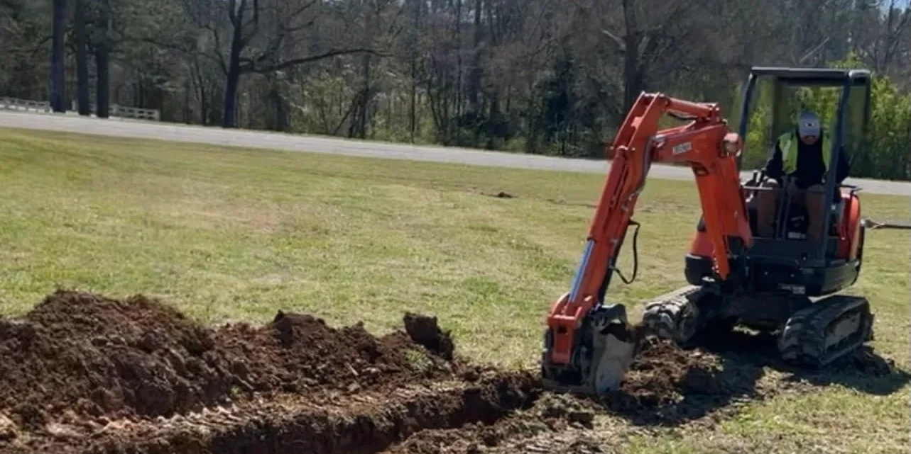
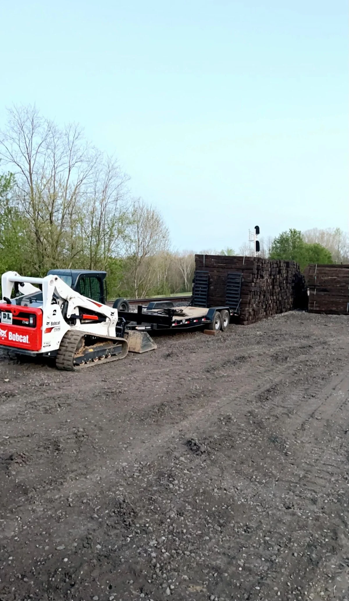

Pipeline & Railroad
Maintenance You Can
Actually Trust
Respond. Execute. Dominate. — We help Southeast infrastructure managers protect their assets and stay 100% compliant — without babysitting contractors who don't know the rules.
Managing Critical Infrastructure Has Never Been More Unforgiving
-
Regulatory Fines Are at Record Highs. A single integrity management violation can cost your company millions. One missed inspection, one non-compliant crew, one overlooked ROW — and your career is on the line.
-
Most Contractors Don't Understand the Rules. You've hired crews who looked good on paper but needed constant supervision on site. That's not a contractor. That's another problem to manage.
-
Aging Infrastructure Won't Wait. Vegetation grows back, corrosion spreads, and ties degrade whether or not you have the right crew lined up. Every delay compounds the risk.
You need a contractor who shows up certified, works safely, and gets it done right — the first time.
Full-Spectrum Pipeline & Railroad Maintenance
Certified crews. Proper equipment. Zero tolerance for shortcuts.

ROW Mowing & Vegetation Control
Skid steer and heavy equipment ROW maintenance that keeps pipeline corridors clear for aerial and ground inspection. PHMSA-compliant work, every time.
Learn more
Excavation & Pipeline Support
Precision mechanical and hand excavation within tolerance zones, backfilling, compaction, and full surface restoration by qualified operators.
Learn more
Railroad Tie Sorting & Logistics
High-volume tie sorting, bundling, logistics coordination, surface prep, and abrasive blasting support that keeps your rail operation running efficiently.
Learn moreThree Steps to Protected Infrastructure
No complexity. No runaround. A clear path from first contact to job complete.
Request a Consultation
Contact us via form or our 24/7 line to describe your project scope, timeline, and compliance requirements.
Receive Your Maintenance Roadmap
We develop a customized project plan tailored to your site, your schedule, and your regulatory obligations.
Execute & Stay Compliant
Our certified crews handle the work from start to finish — on time, within budget, and fully compliant — so you can focus on leading your team, not managing ours.


Common Questions
Are you ISNetworld and NCMS compliant?
Yes. R.E.D. Enterprise maintains active compliance status on both ISNetworld and NCMS. We can provide W-9s, COIs, and safety records immediately upon request to expedite your vendor onboarding process.
Do you handle emergency response calls?
Absolutely. We are available 24/7/365 for emergency dispatch. Call (256) 405-5719 at any hour. In critical infrastructure, emergencies don't follow business hours — and neither do we.
What states do you serve?
R.E.D. Enterprise is headquartered in Anniston, Alabama and serves Alabama, Tennessee, Georgia, and surrounding Southeastern states. Our local presence allows faster mobilization than national contractors.
Can you provide documentation for prequalification?
Yes. Our administration team can provide full prequalification packages including W-9, COI, safety records, and compliance documentation for ISNetworld, NCMS, and other contractor management platforms — same day upon request.
Ready to Protect Your Infrastructure?
We understand the pressure of maintaining a zero-incident safety record while managing aging assets and tightening regulations. Whether it's scheduled ROW maintenance or a 2am emergency call, R.E.D. Enterprise is ready to mobilize.